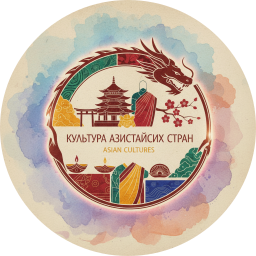
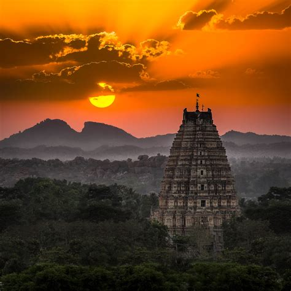
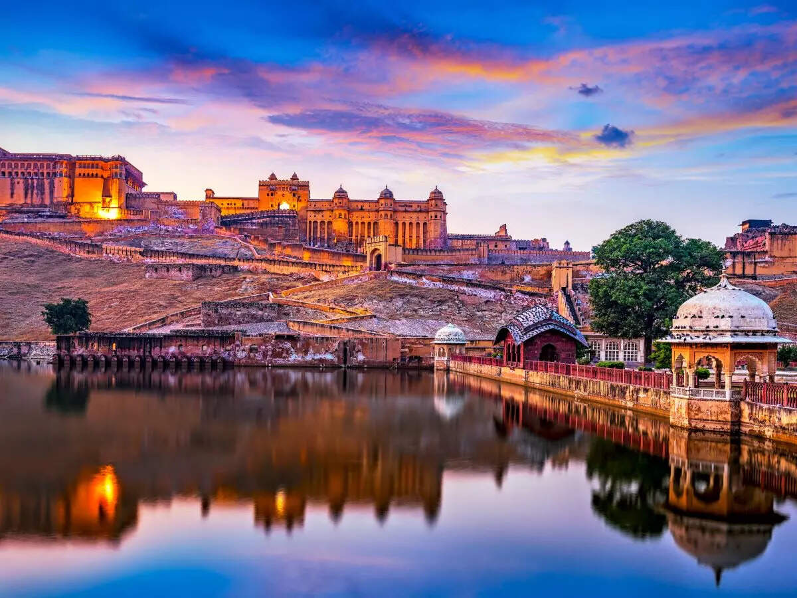
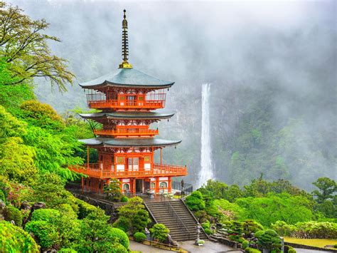

Азия — это континент с огромным разнообразием, дом для множества культур, языков и традиций. Среди его множества стран Китай, Индия и Япония выделяются благодаря своим богатым историям и культурному значению. Понимание культур этих стран дает представление о их ценностях, социальных нормах, искусстве и верованиях. Оно расширяет наш кругозор, помогая совершенствоваться при помощи познания культур, и возможно применения некоторых из этих аспектов в жизни. В этой статье рассматриваются культурные аспекты Китая, Индии и Японии, подчеркивая их уникальные характеристики и общие влияния.
Китай - одна из самых древних непрерывных цивилизаций в мире с историей, охватывающей более 4000 лет. Влиятельные философии, такие как конфуцианство, даосизм и буддизм, глубоко сформировали китайское общество.
Китайский язык, с его пиисьменностью, различными диалектами, играет важную роль в культурной идентичности нации.
Китайское искусство известно своим акцентом на гармонию и природную красоту, что видно в традиционной живописи и каллиграфии.
Праздники, такие как Китайский Новый год и Фестиваль середины осени, отмечают темы семьи, процветания и гармонии.
Культурные церемонии вокруг еды, такие как чайная церемония, подчеркивают важность внимательности в повседневной жизни.
Классическая китайская литература, представленная такими произведениями, как "Дао Дэ Цзин" выражает их глубокие философские идеи.

Индия часто описывается как субконтинент из-за своего огромного географического и культурного разнообразия.Религиозные верования, включая индуизм, буддизм, джайнизм и ислам.
Индия является домом для огромного числа языков. Насчитывается 18 национальных языков страны, но хинди и английский основные. Индийская литература отражает ее культурное разнообразие, включая классические тексты, такие как "Махабхарата" и "Рамаяна," наряду с современными романистами, такими как Арундхати Рой и Салман Рушди.

Индийское искусство и архитектура, от сложных резьб по храмам до величественности Тадж Махала, индийская классическая музыка и танцевальные формы — такие как бхаратнатьям и катхак — подчеркивают богатое художественное наследие, характеризующееся ритмом, повествованием и духовным выражением.Яркость индийской культуры прекрасно отражается в ее праздниках, таких как Дивали, праздник огней, и Холи, праздник красок.

Япония представляет собой уникальное сочетание древних традиций и современных влияний. Коренные верования синтоизма и буддизма гармонично сосуществуют, формируя общественные ценности и культурные практики.Японский язык с его сложными системами письма — хирагана, катакана и канджи — отражает общественные нюансы нации. Японская литература, подчеркивающая работы таких авторов, как Харуки Мураками и классические тексты, такие как "Повесть о Гэндзи," акцентирует внимание на темах природы, мимолетной красоты и человеческой сущности.
Японское искусство, от традиционного икебана (аранжировка цветов) до каллиграфии, демонстрирует эстетический принцип простоты и изящества. Аниме и манга приобрели мировую популярность, оказав влияние на современную сферу развлечения.
Японская кухня характеризуется искусностью и вниманием к сезонным ингредиентам, а блюда, такие как суши, рамен и темпура, отражают глубокое признание вкуса
Японские праздники, такие как Ханами (просмотр цветущей вишни) и Танабата (звездный фестиваль), воплощают глубокую признательность страны к природе и сезонным изменениям.
Культуры Китая, Индии и Японии предлагают уникальные мысли о своих исторических предысториях, философских основах и художественных выражениях. Несмотря на свои отличительные черты, эти нации разделяют глубокое уважение к традиции и сообществу, которое продолжает формировать их идентичности в все более глобализированном мире. Понимание этих культурных нюансов не только обогащает наше восприятие Азии, но и подчеркивает универсальный человеческий опыт, который объединяет нас всех.